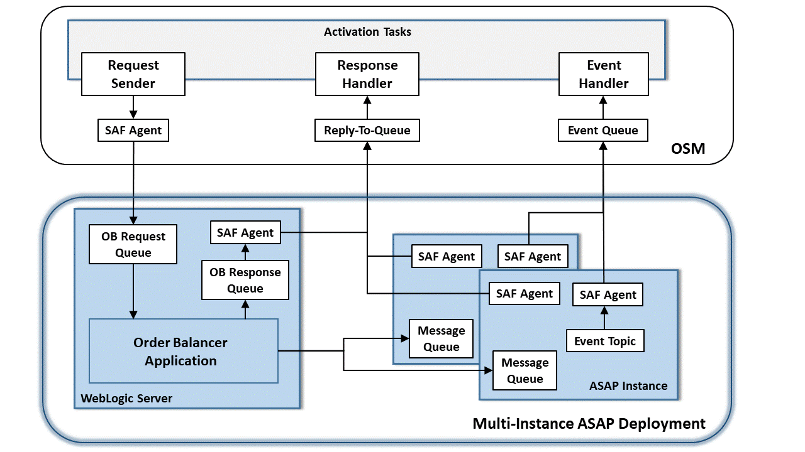

Order Balancer primarily consists of Order Balancer Queue, a queue where the requests from upstream systems are sent to. Order Balancer routes the requests to the registered ASAP instances and monitors the status of the instances.
The requests that Order Balancer receives and processes are categorized as follows:
- Non-Sticky: These are requests that are server-independent. For example, createOrderByValue is a non-sticky request.
- Sticky: These are requests that are server-dependent. For example, suspendOrderByKey is a sticky request.
Order Balancer performs the following order management functions: - Even distribution of create type orders (non-sticky) among the member instances. Order Balancer distributes orders to ASAP instances in a round-robin fashion. - Zero order loss: When sending an order to a member instance fails, Order Balancer marks the member instance as down and attempts to send the same order to a member instance that is available. - Order dependency: Order Balancer saves the details of the Order ID of an order and the instance that processed the order in the database. It caches these details locally on the server and to a database. The modify or rollback orders (sticky orders) are sent to the member instance fetched from the database for the current Order ID.
Order Balancer performs the following ASAP member instance management functions: - Add a new member instance to or remove an existing member instance from Order Balancer. - Instance health: When the sending of an order to a member instance fails, Order Balancer marks the member instance as down and polls for its state periodically. When the instance is reachable, Order Balancer automatically sets the member instance state to up and starts routing orders to it. - Instance pausing: Pause and resume order flow to a specific instance for maintenance purposes.
The ASAP instances that you want to register with Order Balancer should have the same configuration and cartridges. Any instance can service any non-sticky request
Connecting Order Balancer with Multiple ASAP Instances to a Remote Application
Oracle recommends that you create an SAF agent between Order Balancer, all ASAP WebLogic Servers, and the remote application WebLogic Server. Oracle recommends this SAF agent for JMS to ensure reliable communication.
Figure 6-1 illustrates SAF configuration between Order Balancer with multiple ASAP instances and a client on a remote application. In this illustration, OSM is used as an example of a remote application.

Connecting Order Balancer with Multiple ASAP Instances to a Remote ApplicationIn this example, an OSM SAF agent sends requests to the Order Balancer request queue. Based on the order type in the requests, Order Balancer routes the requests to the message queue of the corresponding ASAP member instance. The ASAP instance processes the requests and returns responses through the ASAP SAF agent to the OSM reply-to queue. In case of exceptions in Order Balancer, such as ASAP server is down, and invalid order sent in the request, Order Balancer sends the error responses from Response Queue with an SAF agent to OSM reply-to-queue. Each ASAP member instance sends work order state changes from their respective JSRP XVTEventTopic through a JMS bridge with an SAF agent to the OSM event queue.
For detailed instructions on creating SAF and JMS bridges between ASAP and OSM, see the Configuring WebLogic Resources for OSM Integration With ASAP And UIM On Different Domains (Doc ID 1431235.1) knowledge article on My Oracle Support. This article is applicable to any remote application that uses a WebLogic JMS server to send and receive web service messages or JMS messages.
Setting Up Order Balancer for High Availability
You can set up and run multiple Order Balancer instances for high availability. Each Order Balancer handles the requests for all the registered ASAP instances. For example, if two independent Order Balancer instances are running, Order Balancer OB1 fails, the other Order Balancer OB2 distributes the requests to all the registered ASAP instances. All the Order Balancer instances use the same database.
Order Balancer uses the JPA shared cache for data consistency across all the Order Balancer instances and automatically synchronizes the member instance data updates. It automatically refreshes the instances at configurable interval across multiple Order Balancer instances. You use the optional configuration parameter CACHE_EXPIRY to define the duration in seconds that JPA shared cache lives. After the duration, cached queries and entities expire and are refreshed upon next access. If an Order Balancer updates the instance data, it takes that CACHE_EXPIRY duration for the other Order Balancer instances to reflect the change. To have optimum synchronization, you can choose the CACHE_EXPIRY duration based on two factors:
- How often do you perform administrative tasks?
- What is the optimum duration that data can be inconsistent across Order Balancer instances?
When you pause the ASAP instances for maintenance activities such as ASAP upgrade, you must wait until the CACHE_EXPIRY interval expires after the pause request and before proceeding with the maintenance activity on ASAP for the changes to reflect in all the Order Balancer instances.